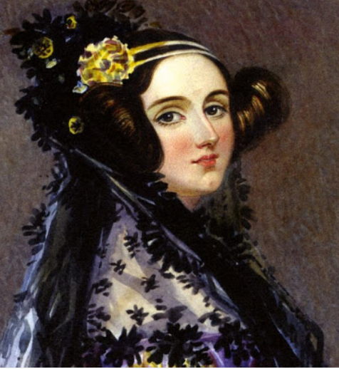
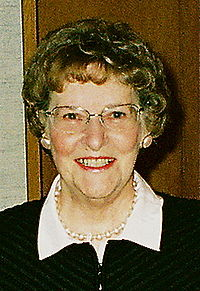

Ada Lovelace
Augusta Ada Byron King, também conhecida como Ada Lovelace, foi uma matemática, escritora e condessa.
Filha do poeta britânico Lord Byron, nasceu em Londres, Reino Unido, no dia 10 de dezembro de 1815
e morreu em novembro de 1852 aos 36 anos.
Embora o trabalho de Ada faça parte da história da ciência e da tecnologia,
seu pai nunca teve a oportunidade de reconhecer a importância de sua filha. Um mês após o nascimento
de Ada, Lord Byron terminou o relacionamento com a mãe da menina, Anabella, a Lady Byron,
e se mudou para a Grécia.
Desde de pequena Ada demonstrava empenho pelo conhecimento matemático, científico e tecnológico,
quando tinha 17 anos conheceu a Sra. Mary Somerville, tradutora das obras do matemático Pierre-Simon Laplace,
Somerville tinha contatos com grandes inventores e cientistas da época e estimulou que Ada estudasse matemática e tecnologia,
com 19 anos, Ada foi concidada para um jantar na casa de Somerville, onde encontrou Charles Babbage,
que estava trabalhando em uma nova espécie de máquina de cálculo, um tempo depois a calculadora de Babbage foi batizada de Máquina Analítica,
os dois conversaram sobre uma forma de melhorar a máquina, mas Ada não tinha como ajudar.
Em 1843, aos 28 anos, casada com o conde de Lovelace e mãe de três filhos, Ada traduziu um artigo sobre o funcionamento da máquina analítica
colocando algumas notas pessoais sugerindo a Babbage um plano de como a máquina poderia calcular os números de Barnoulli,
sequência matemática de números racionais profundamente relacionada com a teoria dos números, este plano sendo considerado o primeiro programa que foi
rodado em uma máquina.
Embora tenha vivido uma vida curta, igual a de seu pai. Ada foi responsável por grande parte do desenvolvimento científico e tecnológico e por isso carrega o título de Mãe da Programação.
Elizabeth J. Feinler
 Elizabeth Jocelyn "Jake" Feinler, nascida em 2 de março de 1931 em Wheeling na Virgína Ocidental, ganhou o apelido de "Jake" por que sua irmã não conseguia falar seu nome corretamente,
é uma cientista da computação e pioneira da internet.
Ela recebeu um diploma de graduação do West Liberty State College , a primeira de sua família a cursar a faculdade.
trabalhou para obter um doutorado. em bioquímica pela Purdue University, quando decidiu ganhar algum dinheiro trabalhando por um ou dois anos antes de começar sua tese.
Trabalhando no Chemical Abstracts Service em Columbus, Ohio , ela atuou como editora assistente em um grande projeto para indexar os compostos químicos do mundo.
Lá ela ficou intrigada com os desafios de criar compilações de dados tão grandes e nunca mais voltou à bioquímica. Em vez disso, em 1960, ela se mudou para a Califórnia e
ingressou no Departamento de Pesquisa de Informações do Stanford Research Institute (agora SRI International), onde trabalhou para desenvolver o
Handbook of Psychopharmacology and the Chemical Process Economics Handbook
Em 1972, Doug Engelbart a recrutou para se juntar ao seu Augmentation Research Center (ARC), patrocinado pelo Information Processing Techniques Office da US Advanced Research Project Agency
(DARPA). Sua primeira tarefa foi escrever um Manual de Recursos para a primeira demonstração da ARPANET na Conferência Internacional de Comunicação por Computador.
Em 1974, ela foi a investigadora principal para ajudar a planejar e administrar o novo Network Information Center (NIC) para a ARPANET
Depois que Feinler deixou a SRI, em 1989, ela trabalhou como gerente de requisitos de rede e ajudou a desenvolver diretrizes para gerenciar a NASA Science Internet (NSI)
NIC no NASA Ames Research Center . Feinler doou uma extensa coleção de jornais da Internet para o Computer History Museum em Mountain View, Califórnia,
e depois que ela se aposentou da NASA em 1996, trabalhou como voluntária no museu para organizar o material. Ela publicou uma história da NIC em 2010.
Em 2012, Feinler foi introduzida no Hall da Fama da Internet pela Internet Society. Em julho de 2013, ela recebeu o Jonathan B. Postel Service Award
"por suas contribuições para o desenvolvimento inicial e administração da Internet por meio de sua liderança do Network Information Center (NIC) para a ARPANET".